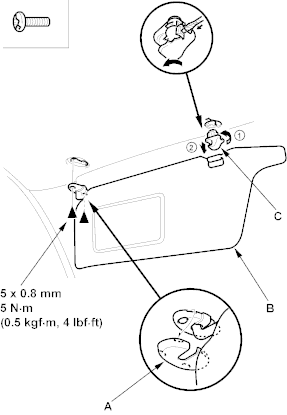
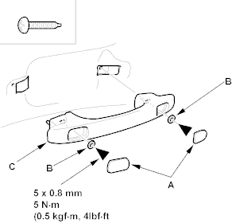

NOTE:
- When prying with a flat-tip screwdriver, wrap it with protective tape to prevent damage.
- Take care not to bend and scratch the headliner.
- Be careful not to damage the dashboard and other interior trim.
- Remove these items:
- Front pillar trim, both sides (see page 20-29)
- Centre pillar upper trim, both sides (see page 20-29)
- Rear pillar trim, both sides (see page 20-30)
- Sunroof switch, for some models, refer to the '01 Civic Shop Manual on this CD (see page 22-157)
- Spotlights, for some models, refer to the '01 Civic Shop Manual on this CD (see page 22-138)
- Ceiling light, refer to the '01 Civic Shop Manual on this CD (see page 22-138)
- From both sides, remove the caps (A) and remove the screws, then remove the sunvisor (B) and holder (C).
Fastener Locations
 : Screw, 4
: Screw, 4

- From both rear passenger's, remove the cap (A) and remove the self-tapping ET screws and washers (B), then remove the grab handles (C).
Fastener Locations
: Screw, 4
